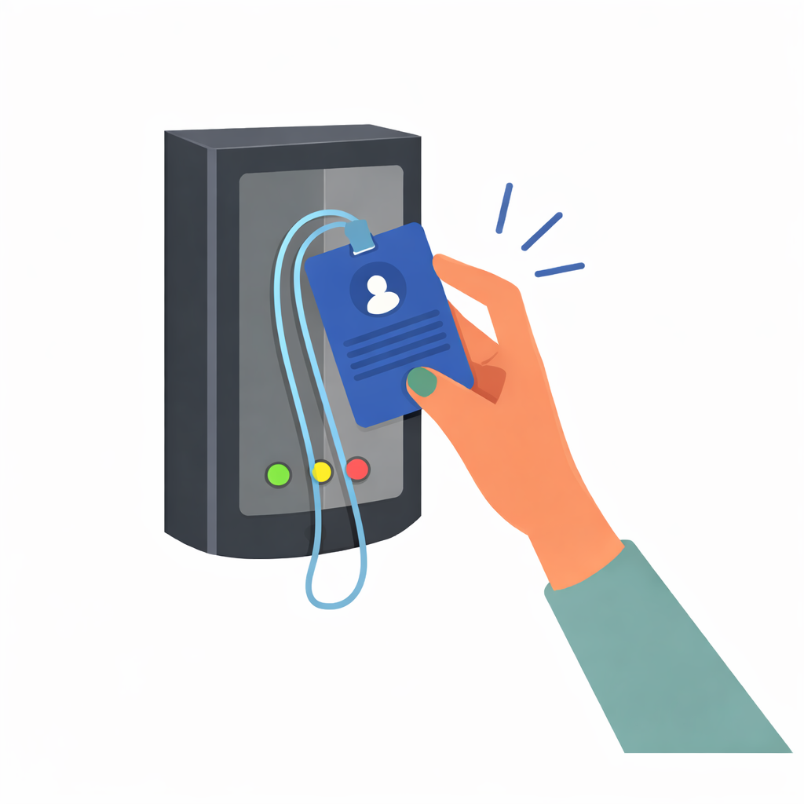
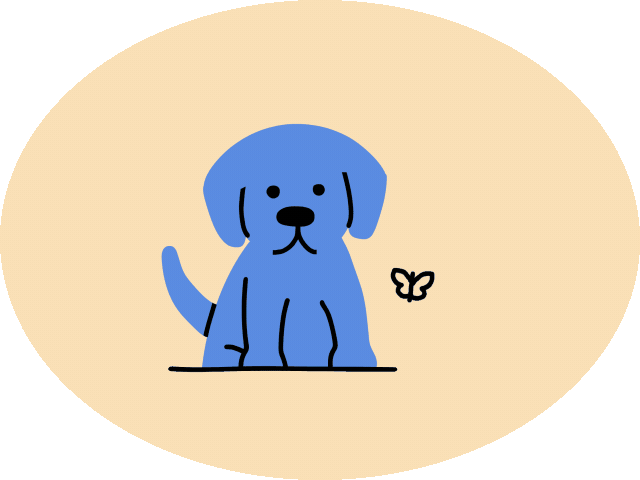
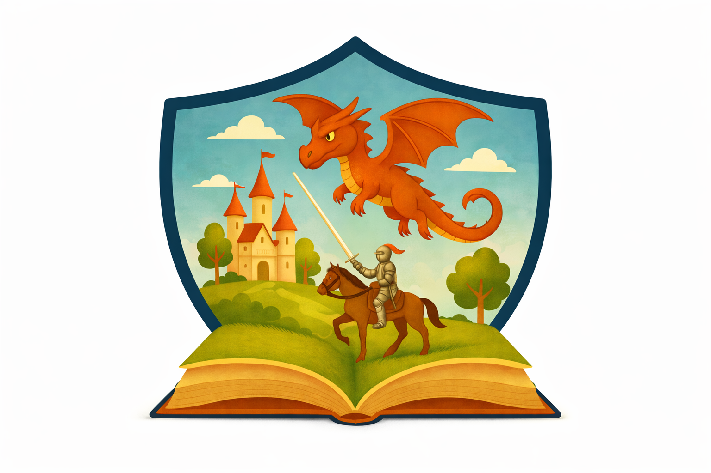
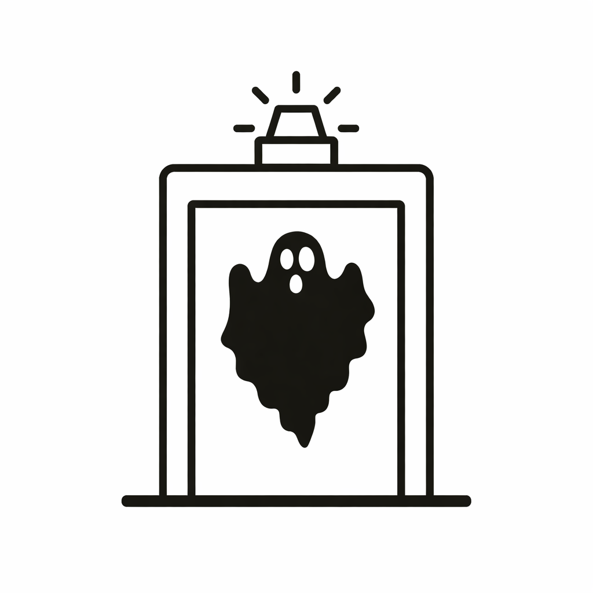
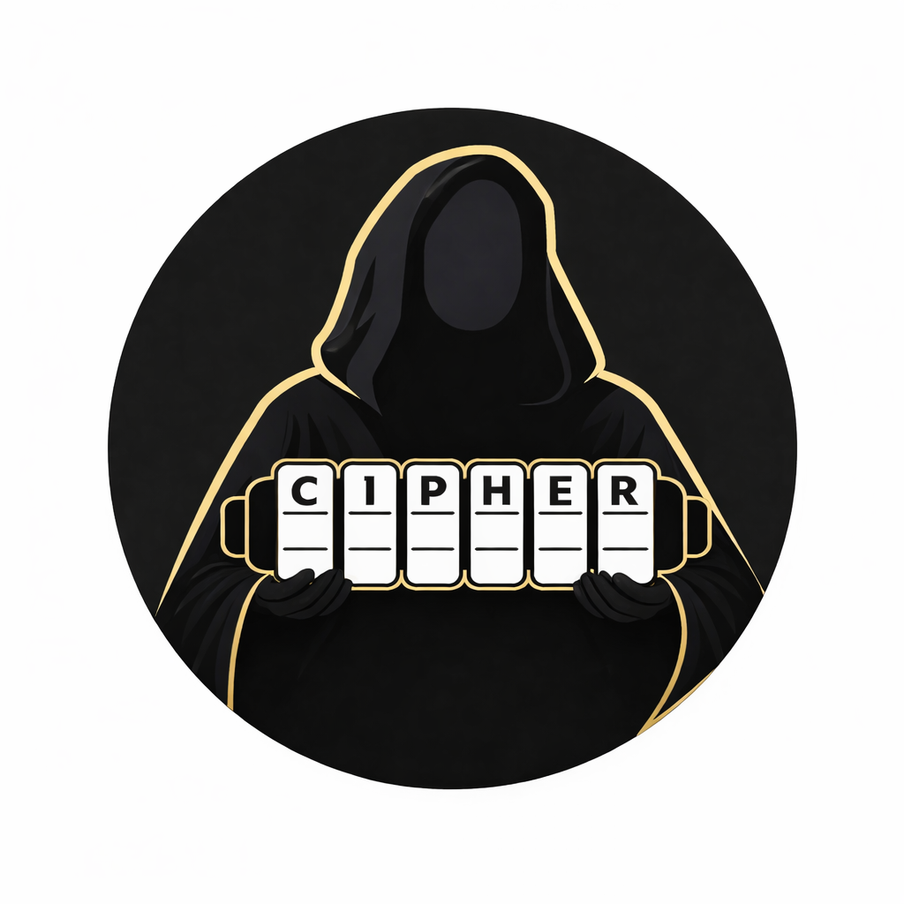
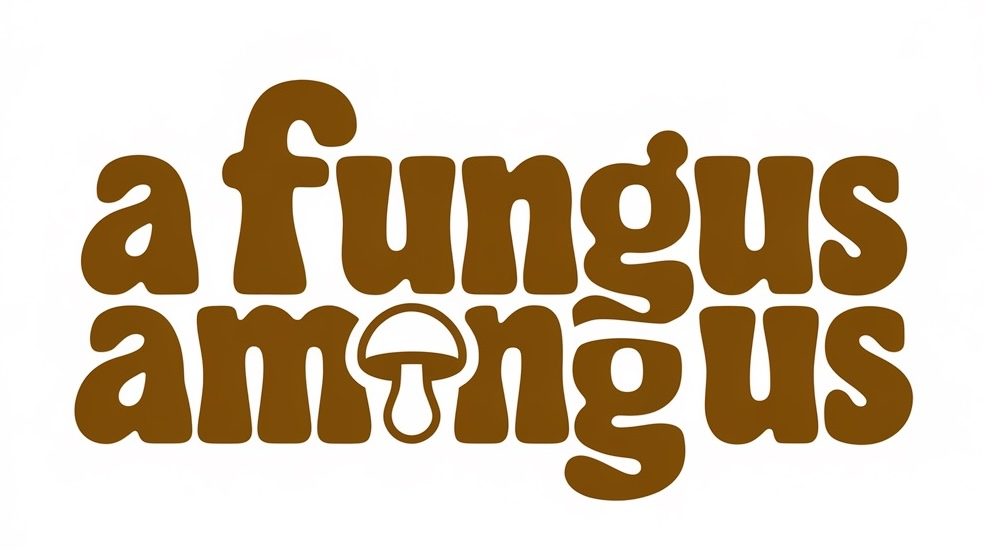
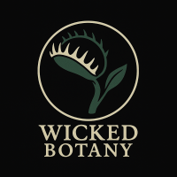
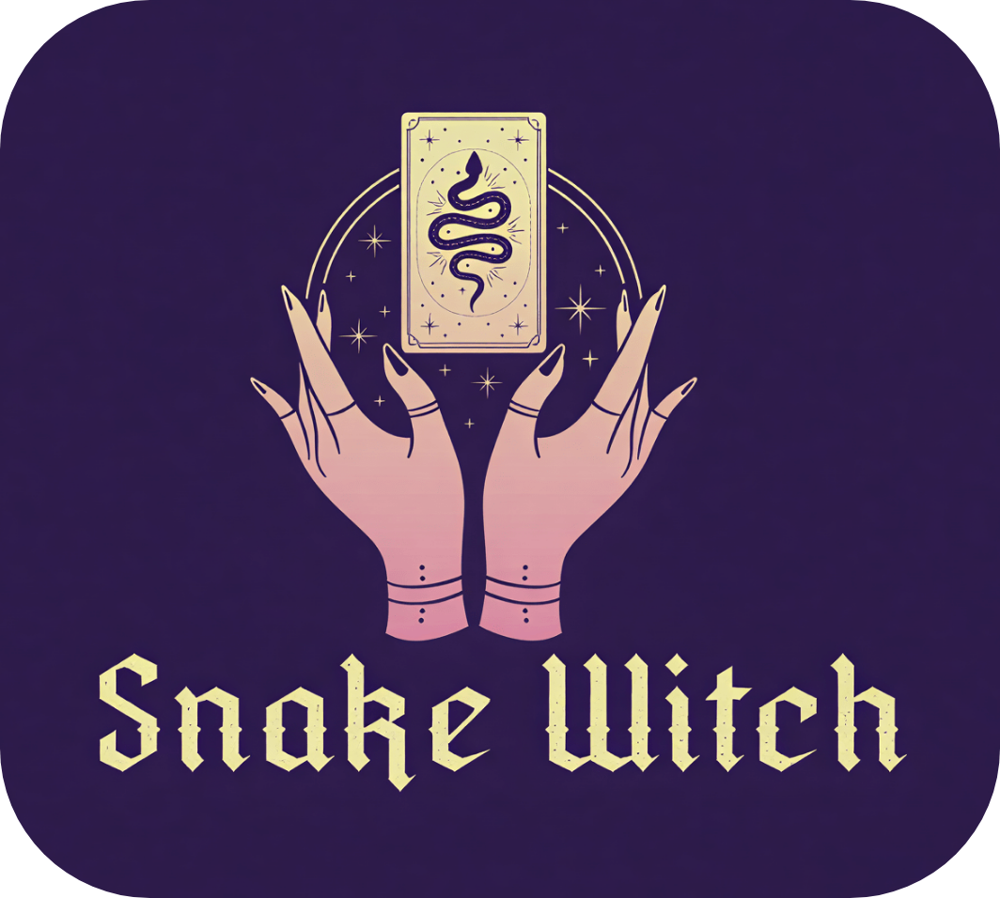
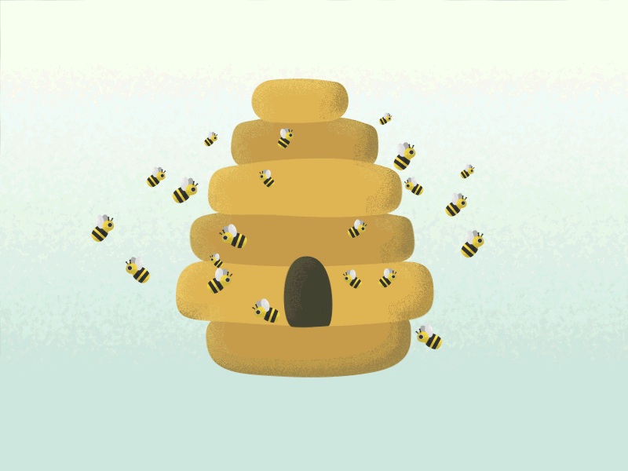

room-reader
Offline NFC-based care visibility without cameras.
Room-level care visibility for assisted living and memory care using intentional NFC taps to record presence and duration.
Tech: ESP32 · PN532 · FastAPI · SQLite · Python
Independent orgs and long-running systems I maintain and evolve.

Offline NFC-based care visibility without cameras.
Room-level care visibility for assisted living and memory care using intentional NFC taps to record presence and duration.
Tech: ESP32 · PN532 · FastAPI · SQLite · Python
Lightweight QR-based daily care logging.
Simple QR scanning system for logging meals, meds, and ADLs without heavy EMR systems.
Tech: QR Codes · Google Sheets · AppScript · JavaScript

Fully local offline reasoning engine.
Personal offline reasoning system combining curated knowledge and retrieval-augmented generation.
Tech: Python · Local LLMs · Embeddings · FastAPI · PyQt
Local-first security and assistive framework.
Cyber and physical perimeter layer supporting offline intelligence systems.
Tech: Python · Sensors · Automation · Policy Enforcement

Privacy-first reading and writing companion.
Protects personal libraries and creative metadata with encryption and access controls.
Tech: AppSheet · AES-128 · JavaScript · HTML
Offline-first tools for resilient living.
Tools and documentation for planning resilient systems under limited power and connectivity.
Tech: Python · C++ · Offline Tooling · Documentation

Multi-repo security scanning engine.
Aggregates automated security scans across repositories into a unified dataset.
Tech: Python · Semgrep · Trivy · SQLite

Developer-first security automation.
Reusable AppSec pipelines and automation components for real-world workflows.
Tech: GitHub Actions · Bandit · Semgrep · Trivy

Open-source fungal education ecosystem.
Learning, logging, and cultivation tools for fungi grounded in real-world practice.
Tech: Python · CLI · Sensors · Data Logging

Research suite for dangerous plants.
Explores toxicology, carnivorous plants, and historical plant use.
Tech: Python · Data Modeling · Simulation
Ball python husbandry platform.
Data-driven system for breeding, genetics, and long-term reptile care.
Tech: Python · Java · Genetics Modeling

Lightweight snake-keeping tools.
Quick utilities for feeding schedules, shed prediction, and logs.
Tech: Python · AppScript · Markdown
Automation-first homestead systems.
Offline-first infrastructure for animals, gardens, and property ops.
Tech: Sensors · SOPs · Dashboards

Smart apiary platform.
Hive telemetry, inspections, alerts, and seasonal tracking.
Tech: ESP32 · Sensors · Telemetry · Offline Dashboards